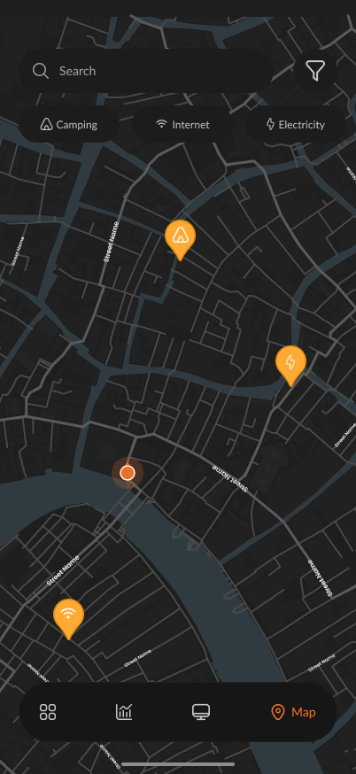
Dashboard — the van at a glance
Power mode, the four resource levels and the air inside on one screen; the tab bar leads to usage, devices and the map.
Power, water and gas of a camper on one screen — so life off-grid doesn’t start with guessing.
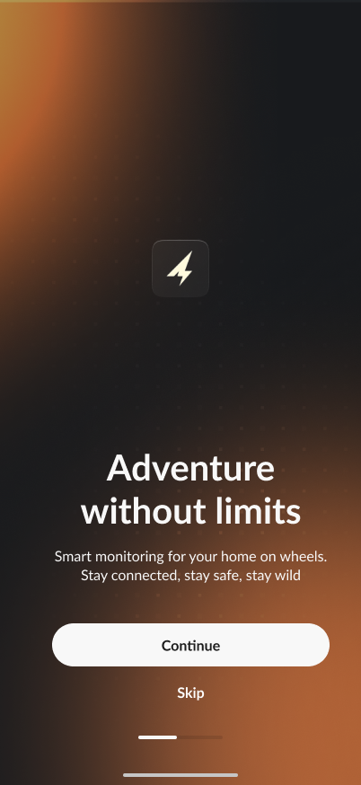
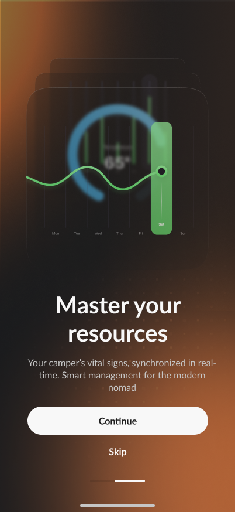
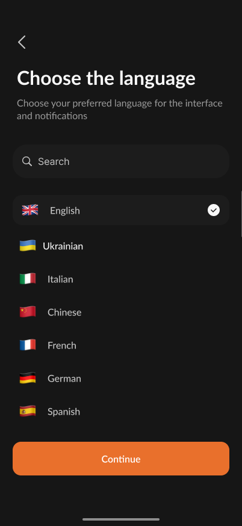
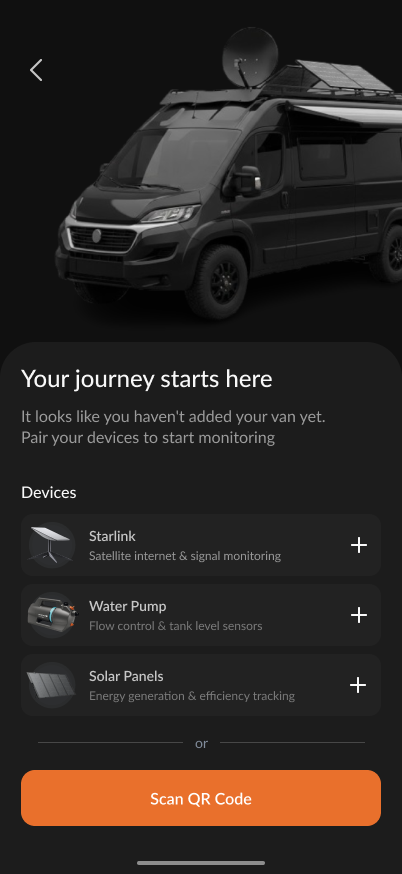
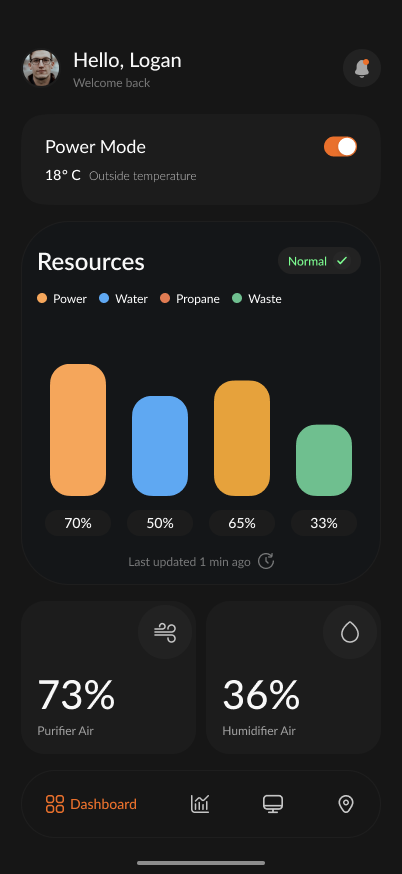
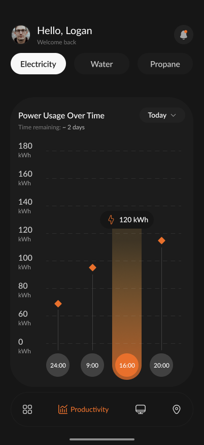
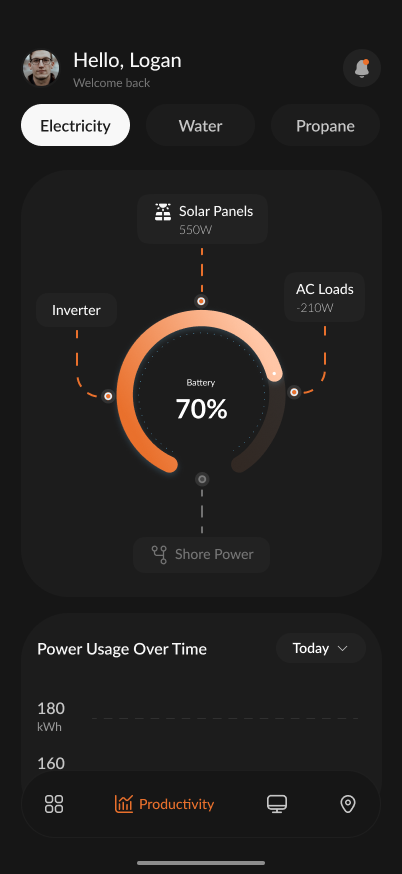

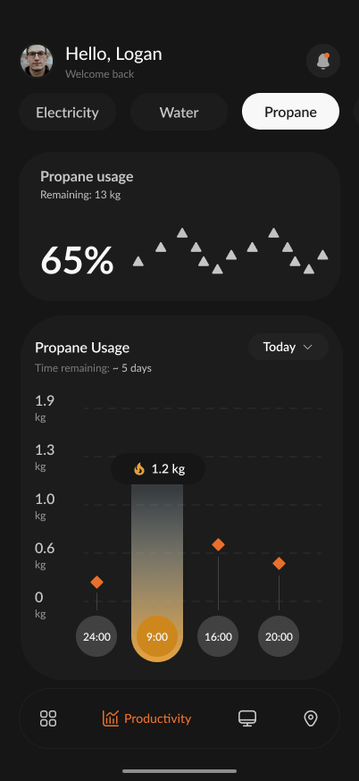
Nomad OS is a companion app for people who live and travel in a camper: it pairs with the van’s systems — solar, battery, water, propane, Starlink — shows their state at a glance and warns before something runs out.
I designed it end to end — reviewing how van and RV monitoring apps work today, defining the structure and key flows, and designing the dark UI and the components behind it.
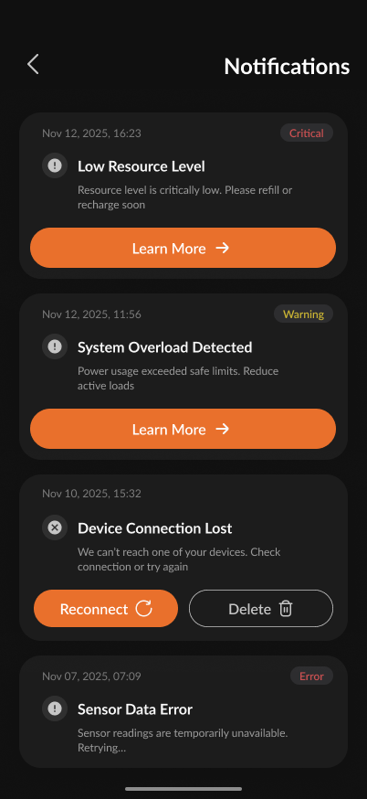
In a camper every system has its own box and its own display — and you usually find out the water or gas is gone when it’s already gone.
power, water, propane and internet — each read in a different place
tanks and batteries run out without a heads-up
pairing devices means manuals and model numbers
Show the whole van as one set of levels — and interrupt only when something needs action.
Electricity, water and propane share one screen — learn it once, read all three.
Solar in at the top, the battery in the middle, inverter, loads and shore power around it.
One tap on Water — 84 L remaining, the level as a big number.
Usage through the day shows when the tank drains fastest.
13 kg remaining, 65% — read exactly like water.
Every tab ends with the time remaining at today’s rate.

Power mode, the four resource levels and the air inside on one screen; the tab bar leads to usage, devices and the map.
An empty van starts with a list of common devices and one QR scan; once paired, each system reports its status on its own card.
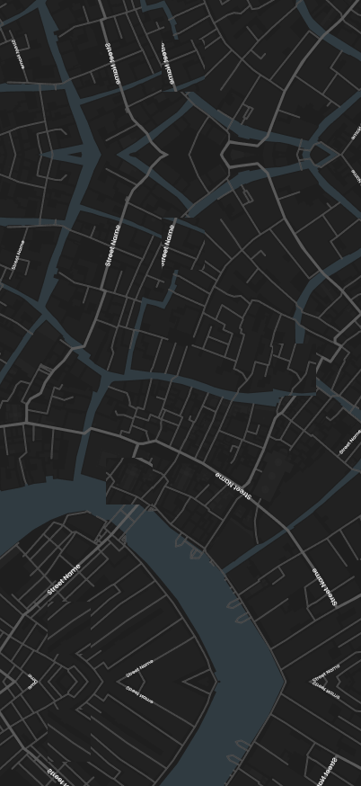
A dark UI that’s easy on the eyes at night in the van; each resource keeps its own colour everywhere, and orange is saved for the next action.
One app for the van’s power, water, gas and internet — levels at a glance, the day’s usage per resource, and alerts that come with the fix.
to pair the first device
for every resource level
warning before a tank or battery runs out
of alerts resolved from the card itself